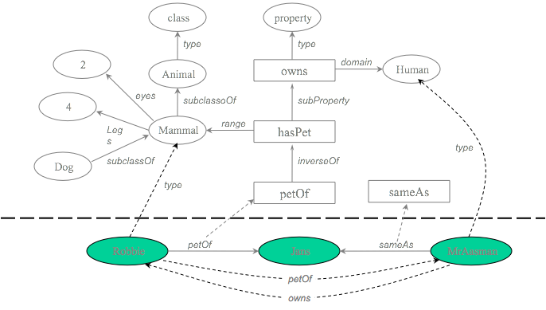
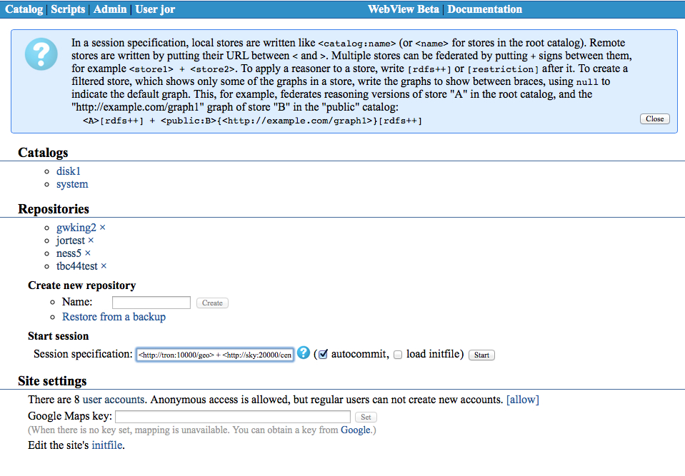
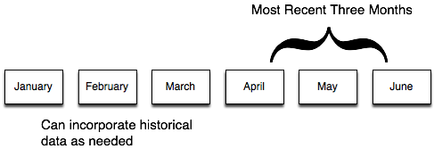

Overview
AllegroGraph is a database and application framework for building Semantic Web applications. It can store data and meta-data as triples; query these triples through various query APIs like SPARQL (the standard W3C query language) and Prolog; and apply RDFS++ reasoning with its built-in reasoner. AllegroGraph includes support for Federation, Social Network Analysis, Geospatial capabilities and Temporal reasoning. All of these are described in more detail below.
The Semantic Web
Since AllegroGraph is a database, we'll start by looking at the kind of data it is designed to store. The figure below represents some information about Jans and his pets. Like much of the data on the web, there are explicit relations like Robbie is the petOf Jans and implicit or common-sense relations such as petOf is an inverse relation to hasPet and Dog is a subClassOf Mammal

Though there are many ways to store this information, the W3C has standardized on the Resource Description Framework (RDF). RDF breaks knowledge into assertions of subject predicate object (like the three sentences above). For obvious reasons, these assertions are called triples. If we have many triples from different contexts, we can append an additional slot to each assertion; we call this slot a named graph. Even though these assertions are now quads, we'll still call them triples. Here are the assertions from above rewritten slightly to fit them into the triple framework:
subject predicate object graph
jans Type Human jans's home page
robbie petOf jans jans's home page
petOf inverseOf hasPet english grammar
Dog subClassOf Mammal science The Semantic Web vision is one where web pages contain enough self-describing data that machines will be able to navigate them as easily as humans do now. This will let computers better assist us in answering questions and managing our ever more complicated world. AllegroGraph is a high-performance database built to hold this information, query it, and reason with it. For more information on the Semantic Web, RDF and all the rest, see the following resources:
- RDF: http://www.w3.org/TR/rdf-primer/,
- RDFS: http://www.w3.org/TR/rdf-schema/, and
- OWL: http://www.w3.org/TR/owl-guide/.
For more information on the above topics, see the Suggested Reading for recommended introductory texts.
One thing to note is that AllegroGraph doesn't restrict the contents of its triples to pure RDF. In fact, we can represent any graph data-structure by treating its nodes as subjects and objects, its edges as predicates and creating a triple for every edge. The named-graph slot can be used to hold additional, application-specific, information. Used this way, AllegroGraph becomes a powerful graph-oriented database.
A Block diagram of an AllegroGraph database
Now that we've seen what kind of data AllegroGraph can manage, we can take a look at how it keeps track of it in a bit more detail:

In RDF-land, an assertion is a statement that
subject predicate object (in the context of graph).The bulk of an AllegroGraph triple store is composed of assertions. Though called triples for historical reasons, each assertion has five fields:
- subject (s)
- predicate (p)
- object (o)
- graph (g)
- triple-id (i)
All of s, p, o, and g are strings of arbitrary size. Of course, it would be very inefficient to store all of the duplicated strings directly so we associate a special number (called a Unique Part Identifier or UPI) with each unique string. The string dictionary manages these strings and UPIs and prevents duplication.
To speed queries, AllegroGraph creates indices which contain the assertions plus additional information.
AllegroGraph can also perform full-text searching in the assertions using its full-text indices.
and Finally, AllegroGraph keeps track of deleted triples
Triple data generally comes into AllegroGraph as strings either from pure RDF/XML (see example) or as the more verbose but simpler N-Triple format (see example). The programmer API also makes it easy to import data from RDBMSs, CSV or any other custom data format
the N-triples data format
<http://franz.com/simple#Animal> <http://www.w3.org/1999/02/22-rdf-syntax-ns#type> <http://www.w3.org/2002/07/owl#Class> .
<http://franz.com/simple#Mammal> <http://www.w3.org/2000/01/rdf-schema#subClassOf> <http://franz.com/simple#Animal> .
<http://franz.com/simple#Mammal> <http://franz.com/simple#eyes> "two" . Some sample RDF/XML data format
<?xml version="1.0"?>
<RDF xmlns="http://www.w3.org/1999/02/22-rdf-syntax-ns#"
xml:base="http://www.w3.org/1999/02/22-rdf-syntax-ns#"
xmlns:xsd="http://www.w3.org/2001/XMLSchema#"
xmlns:rdfs="http://www.w3.org/2000/01/rdf-schema#"
xmlns:owl="http://www.w3.org/2002/07/owl#">
<Description rdf:about="http://franz.com/simple#Animal">
<rdf:type rdf:resource="http://www.w3.org/2002/07/owl#Class"/>
</Description>
<Description rdf:about="http://franz.com/simple#Mammal">
<rdfs:subClassOf rdf:resource="http://franz.com/simple#Animal"/>
<ns1:eyes>two</ns1:eyes>
</Description>
</RDF> You should notice that although the above diagram shows a triple store through an RDF-lens, there is nothing that constrains AllegroGraph to the RDF world. In fact, AllegroGraph contains many features that are outside of pure RDF and make it a true graph database.
Graph databases
We've already seen how AllegroGraph can help manage Semantic Web data and noticed how any graph can be viewed as a collection of triples representing its edges. Because AllegroGraph can store anything in the subject, predicate, object and graph fields of its triples we can add one more quality to the list above:
- In graph-database land, an assertion says that node s is connected to node o via edge p with additional data g.
For many applications, graph databases can be both more flexible and faster than RDBMSs because
You add new predicates without changing any schema
One-to-many relations are directly encoded without the indirection of tables
You never think about what to index because everything is indexed
AllegroGraph has the ability to encode values directly into its triples (thus bypassing the string dictionary completely). This allows for both more efficient data retrieval and extremely efficient range queries. We take advantage of this data representation in the add-on libraries for geospatial reasoning, temporal reasoning and social network analysis.
Transactions
AllegroGraph implements the ACID properties of transaction processing (atomicity, consistency, isolation, and durability) similarly to other database products. This section describes the details of how these properties are implemented and what guarantees developers can expect.
Atomicity
The atomicity property defines that all updates within one transaction are persisted together. A transaction either completely fails or completely succeeds.
With AllegroGraph, when an application calls rollback, the changes that it has made to the triple store since the last commit or rollback are discarded. Likewise, when an application calls commit, all changes since the last commit or rollback are persisted. No partial transaction results will ever be seen by other clients of the database.
Consistency
The consistency property defines that every transaction takes the database as a whole from one consistent state to another. The database itself will never be inconsistent, according to its own consistency rules.
AllegroGraph does not allow for user-defined consistency rules (like, say, foreign key constraints in a relational database). That means that the database has no influence on the application-level consistency of the data stored in a triple store. It is up to the user to make sure that transactions create and maintain a consistent application-level state. At the same time, AllegroGraph guarantees that every commit operation will take the database from one consistent internal state to another consistent internal state.
It is possible for two concurrent transactions to attempt contradictory changes to triple store metadata, such as mapping the same predicate to two different datatypes, or defining the same full-text index using different parameters. The first transaction to commit will succeed normally. Those changes become visible to the second transaction when it attempts to commit. (No rollback is necessary.) AllegroGraph will signal metadata errors at that point, preventing the second transaction from committing.
Isolation
The isolation property defines that every transaction only sees data of other completed transactions, and not partial results of transactions running concurrently.
AllegroGraph implements the snapshot isolation model. In this model, every transaction sees a snapshot of the persistent database state as of the time when the transaction has been started by a commit or rollback operation. During the course of executing transaction code, other transactions can commit and change the persistent state without affecting the snapshot of this transaction. Once the transaction commits, any updates made by concurrent transactions will be made visible as part of the snapshot of the next transaction.
As no triple locking is performed by AllegroGraph, it is possible that a triple that is being read in a transaction could be deleted in a concurrent transaction. Developers need to be aware of this and similar possibilities and make sure that transactions are properly sequenced if such concurrent updates could have an impact on application-level consistency.
Durability
The durability property defines that once the database system signals the successful completion of a transaction to the application, the changes made by the transaction will persist even in the presence of hardware and software failures. (Obviously, the durability property cannot guarantee the persistence of data after a hard disk failure that destroyed data.)
When the commit operation of AllegroGraph returns, the database server will have written the updates made by the transaction to the transaction log and waited for the log I/O operation to finish. Therefore, the application can be sure that every committed transaction will have a permanent effect on the persistent database state.
Modifying a Database
You can manipulate data in triple stores via many different interfaces and languages including Java, HTTP and Lisp. Each language provides mechanisms to create and open triple stores; load them with data in bulk-mode or programmatically; enable RDFS++ reasoning (see RDFS++ Reasoning); query for triples that match simple or complex constraints; serialize triples in many formats; and understand and manage server performance.
Adding triples
AllegroGraph can load data in N-Quads, N-Triples, RDF/XML, TriG, TriX, and Turtle formats. If your data is in a format that AllegroGraph does not support, please contact support@franz.com. In the meantime, you may be able to use the open source tool rapper to convert your data into a format that AllegroGraph can use. You can create full-text indices while loading triples by specifying which predicates should be indexed. Additionally, AllegroGraph supports a wide array of encoded data-types such as numbers, dates, and geospatial coordinates. Using these data-types not only shrinks the size of your triple store (because the string data need not be saved) but also allows super-fast range queries and geospatial queries.
Of course, you can also load triples into AllegroGraph programmatically. This can be used to import custom data formats, or to build a triple store incrementally. Triples can be added using RDF syntax or AllegroGraph's special encoded data-types. Programmatically added triples can also make use of the AllegroGraph's triple-id to perform super-efficient reification.
Getting Triples back
Query Patterns
AllegroGraph provides numerous methods for getting triples back out of a triple store. The simplest is to ask for triples matching a pattern of subject, predicate, object and graph. Each part of the pattern can be an exact match, a range specifier, or a wild card (don't care). For example, the pattern
subject : <http://www.example.com/people/gwking>
predicate: wild
object : wild
graph : <http://www.example.com/context/initial> would retrieve all triples about the person gwking from the graph named initial. We could learn about all of someone's phone numbers using:
subject : <http://www.example.com/people/gwking>
predicate: <http://www.example.com/telephone/>
object : wild
graph : wild and learn about everyone born in the first half of 1964 with:
subject : wild
predicate : <http://www.example.com/birthm/>
object-start : "1964-01-01"^^<http://www.w3.org/2000/01/XMLSchema#date>
object-end : "1964-06-30"^^<http://www.w3.org/2000/01/XMLSchema#date>
graph : wild You can use these pattern-based queries in your own programs to query triple stores at the bare-metal. In fact, AllegroGraph's other query interfaces such as SPARQL, Prolog and the RDFS++ reasoner all ground out in patterns exactly like these.
Range Queries
In addition to strings, AllegroGraph can store many data-types directly in its triples. This lets it perform range queries in a single operation. Suppose, for example, that weights were stored as strings like
"158"^^<http://www.w3.org/2000/01/XMLSchema#long> If you wanted to find all people whose weight was greater than 200, then you would need to scan every triple in the store, lookup the string, parse it and then do your comparison. Ouch! With AllegroGraph, the value is encoded directly in the raw triple data (using a special kind of UPI). A range query involves immediate data lookup and comparison and is therefore as fast as a search for an individual triple.
Cursors
When AllegroGraph is given a query pattern, it responds with a cursor that iterates over the triples that match the pattern. Programs can use functions like Lisp's cursor-next to move through a cursor or use higher-level constructs like map-cursor.
Querying Quickly: Indices
AllegroGraph builds indices automatically so that any query can find its first match in a single I/O operation. We can abbreviate the index flavors using s for subject, p for predicate and so on. What matters with an index is the sort order of the triples. For example, the spogi index first sorts on subject, then predicate, object, graph, and finally, id. If we ignore the triple ID, there are 24 different index flavors running from spogi through gopsi. Fortunately, we don't need every possible flavor in order to produce fast queries. Suppose, for example, that one of the triples we saw above is in our triple store as
id subject predicate object graph
21445 jans Type Human jans's home page There are many queries that will return this triple but the best flavor to use is the same for many of them. For example, we can use the spogi flavor for any of these queries:
- subject =
<jans> - subject =
<jans>and predicate =<Type> - subject =
<jans>and predicate =<Type>and object =<Human>
Out of the box, AllegroGraph builds six index flavors in the background as triples are added.
Duplicate triples
It is possible that duplicate triples will be stored. This can, for example, occur because two users independently create and commit identical triples. Duplicate triples reduce the efficiency of the system. To remove these duplicate triples, use the function delete-duplicate-triples. It lets you specify what duplicate means: Two triples can be the same if they have the same subject, predicate, object, and graph (the :spog option, which is the initial value); or they can be the same if they have the same subject, predicate, and object, ignoring the graph (the :spo option).
Query the Database
AllegroGraph and SPARQL
SPARQL is the query language of choice for modern triple stores. AllegroGraph's SPARQL sub-system adheres to W3C standard; includes a query optimizer; and has full support for named-graphs. For more information on using SPARQL with AllegroGraph, see the tutorial and SPARQL reference guide.
RDFS++ Reasoning
Description logic or OWL reasoners are good at handling (complex) ontologies, they are usually complete (give all the possible answers to a query) but have completely unpredictable execution times when the number of individuals increases beyond millions.
AllegroGraph's RDFS++ reasoning (see RDFS++ Reasoning) supports all the RDFS predicates and some of OWL's. It is not complete but it has predictable and fast performance. Here are the supported predicates:
- rdf:type and rdfs:subClassOf
- rdfs:range and rdfs:domain
- rdfs:subPropertyOf
- owl:sameAs
- owl:inverseOf
- owl:TransitiveProperty
The reasoner tutorial provides a quick introduction of how each predicate behaves and describes the reasoner in more detail. AllegroGraph also includes an optional OWL restriction reasoning module that supports owl:hasValue, owl:someValuesFrom and owl:allValuesFrom (see the hasValue reasoning tutorial).
Prolog
Prolog is an alternative query mechanism for AllegroGraph. With Prolog, you can specify queries declaratively. The Prolog tutorial provides an introduction to using Prolog and AllegroGraph together. Our Prolog is implemented in Lisp so for Lispers, the combination of Lisp, Prolog, and AllegroGraph are a natural triad. You can also send Prolog select queries to the server using Java (see Javadocs) or using the HTTP-interface (see the HTTP protocol). You send them as strings and you get the bindings back as lists of values. For the Lisp interface, besides the tutorial mentioned above, see the Lisp Reference.
AllegroGraph Federation
The block diagram we saw above is abstract; it can be implemented in many different ways. AllegroGraph uses that same programming API to connect to local triple stores (either on-disk or in-memory), remote triple stores and federated triple stores. A federated store collects multiple AllegroGraph triple stores of any kind (local, remote, reasoning, etc) into a single virtual store that can be manipulated as if it were a simple local store. Note that this federation of AllegroGraph stores is not related to the similarly named SPARQL federated queries where the use of the SERVICE keyword in a query can direct a portion of a query to a particular SPARQL endpoint which need not be an AllegroGraph store.
Federation provides three big benefits:
- it scales,
- it makes triple stores more manageable, and
- it makes data archive almost trivial.
Federation: Scalable triple stores
Since federation provides a natural mechanism to join disparate triple stores, we can use separate instances of AllegroGraph to load data on multiple CPUs and then combine them at query time. 1 Loading triples is an extremely parallelizable task in that using N CPUs decreases the total time by a factor of N.
Federation: Data Management
AllegroGraph's federation mechanism and flexible triple store architecture combine to make it easy to connect multiple stores (in the same AllegroGraph instance, multiple AllegroGraph instances on the same machine, or multiple AllegroGraph instances on a cluster of machines) together and treat them as one. When a user creates an AllegroGraph federated repository, a virtual index of the constituent stores is created and maintained in the client session to facilitate intelligent query processing and maximum performance. For example, we can combine the dbPedia, the USGS Geonames database and Census information into a single virtual store and explore the interconnections between these datasets without worrying about where the triples originate. Even better, we can keep different kinds of triples separate and combine them as needed. E.g., we can keep known facts, inferred triples, provenance information, ontologies, metadata and deleted triples in separate, easily manageable stores and combine and re-combine the data as necessary.

Federation: Data warehousing
Enterprise data volumes are growing without bound making it essential to enable the accumulation and archiving of multi-billions of triples. Federation lets you segment your data into usable chunks that can be swapped in and out as needed.

The figure illustrates how an enterprise data center can use federation to easily work with the three most current months of data. Since federated data stores can be built easily and easily changed, it is just as simple to look at historical data whenever that is necessary.
Advanced Capabilities
AllegroGraph supports several specialized datatypes for efficient storage, manipulation, and search of Social Network, Geospatial and Temporal information. AllegroGraph also supports the xsd:date, xsd:dateTime types, and the xsd:integer and xsd:decimal types.
Social Network Analysis
By viewing interactions as connections in a graph, we can treat a multitude of different situations using the tools of Social Network Analysis (SNA). SNA lets us answer questions like:
How closely connected are any two individuals?
What are the core groups or clusters within the data?
How important is this person (or company) to the flow of information
How likely is it that this person and that person know one another

The field is full of rich mathematical techniques and powerful algorithms. AllegroGraph's SNA toolkit includes an array of search methods, tools for measuring centrality and importance, and the building blocks for creating more specialized measures.
Geospatial Primitives
AllegroGraph provides a novel mechanism for efficient storage and retrieval of multi-dimensional data, location data in particular. We often refer to this kind of data as "geospatial", although that term refers specifically to positions on or around the earth's surface. AllegroGraph supports a more general notion of N-dimensional ordinates systems.
Coordinates are packed into a single UPI (defined above). The more coordinates, the less precision for each coordinate, of course, because the total number of data bits is fixed. The user can control the allocation of precision among the several ordinates.
See the document N-dimensional Geospatial for a description and a tutorial on the new nD geospatial facility.
Temporal Primitives
AllegroGraph supports efficient storage and retrieval of temporal data including datetimes, time points, and time intervals:
- datetimes in ISO8601 format: "2008-02-01T00:00:00-08:00"
- time points: ex:point1, ex:h-hour, ex:when-the-meeting-began, etc
- time intervals: ex:delay-interval (say, from point ex:point1 to ex:h-hour)
Once data has been encoded, applications can perform queries involving a broad range of temporal constraints on data, including relations between :
- points and datetimes
- intervals and datetimes
- two points
- two intervals
- points and intervals
AllegroGraph Indexing
AllegroGraph uses a set of sorted indices to quickly identify a contiguous block of triples that are likely to match a specific query pattern.
These indices are identified by names that describe their organization. The default set of indices are called spogi, posgi, ospgi, gspoi, gposi, gospi, and i, where:
- S stands for the subject URI.
- P stands for the predicate URI.
- O stands for the object URI or literal.
- G stands for the graph URI.
- I stands for the triple identifier (its unique id number within the triple store).
The standard seven indices are enabled when you create a triple store. You can customize this set, however, both by eliminating indices that your application will not use, and by requesting custom indices that match your more unusual triple patterns.
- For instance, if your application does not use subgraphs, the indices beginning with "g" will never be used. You can speed up indexing dramatically by eliminating these indices from the system.
AllegroGraph indexing is fully discussed in Triple Indices.
Full-text Indexing
AllegroGraph can build full-text indices of the strings of the objects associated with a set of predicates that you specify. Given a full-text index, you can search for text using:
- boolean expressions ("market" AND "housing")
- wild cards ("science*" OR "math*")
- phrases ("Semantic Web search")
Of course, full-text indexing slows the rate at which you can insert triples. Our experiments suggest that you'll see a decrease somewhere between 5 and 25% depending on the number of predicates involved and the kinds of string data in your application.
See Full-text Indices for more information.
Replication in AllegroGraph
AllegroGraph Replication is a real-time transactionally consistent data replication and data synchronization solution (replication is making new copies and synchronization ensures existing copies are updated to be identical). It allows businesses to move and synchronize their semantic data across the enterprise. This facilitates real-time reporting, load balancing, disaster recovery, and high availability configurations. It assists organizations in mission critical challenges, such as managing liability or fraud, eliminating the risk of distributed enterprise scale environments, and reducing the costs.
AllegroGraph replication is documented in Replication.
Programming AllegroGraph
AllegroGraph comes in multiple flavors and works with multiple programming languages and environments.
- Java
- The Java client interface implements most of the RDF4J and Jena interfaces for accessing remote RDF repositories. Because AllegroGraph provides functionality not found in other triple stores, we have implemented extensions where applicable. See the pre-release Jena page for information on our Jena support. (See the tutorial and Javadocs for more information). Note that Java 8 (or later) is required for the java client.
- Python
- The Python API offers convenient and efficient access to an AllegroGraph server from a Python-based application. This API provides methods for creating, querying and maintaining RDF data. The Python tutorial provides an overview of the API.
- HTTP
- It is now possible for web developers and programmers alike to interact with AllegroGraph 6.4.2 completely using a RESTful HTTP protocol (using GET, PUT, POST) to add and delete triples, to query for individual triples and to do SPARQL and Prolog selects using the Sesame 2.0 HTTP-interface with some extensions. See REST/HTTP interface and HTTP reference for more information.
- Javascript
- The AllegroGraph RDF server can be scripted using the JavaScript language. The easiest way to get started with this is to open a repository in WebView and select 'Utilities->Scripts' from the navigation bar. Javascript documentation is in JavaScript. Browser-based Javascript applications may interact with AllegroGraph using the HTTP interface. It might be necessary to configure cross-origin resource sharing (CORS) on the server due to same-origin policy (SOP) restrictions enforced by web browsers. See here in the REST/HTTP interface document for more information. The configuration options necessary to enable CORS are described here in the Server Configuration and Control document.
- Lisp
- Lisp programmers can open and use triple stores from within Lisp. Lispers can create applications in the same image that the AllegroGraph server is running or use a
remote triple storeto access data in client/server mode. See Lisp Quickstart and Lisp Reference for more information.
3rd-party Integration
AllegroGraph works with various other database tools, some of which organize data stores and others of which provide specialized indexes. Here are some of the tools provided by other sources and vendors which work with AllegroGraph:
- Cloudera
- Cloudera provides Apache Hadoop tools. AllegroGraph supports loading files from Hadoop Distributed File Systems,such as supplied by Cloudera.
- MongoDB
- MongoDB is a cross-platform document-oriented NoSQL database. See MongoDB integration for information on AllegroGraph's integration with MongoDB.
- Apache Solr
- Apache Solr is an open-source freetext indexing/searching platform from the Apache Lucene project. Lucene is a Java Based Freetext Indexer with many features. Solr is an XML database wrapper around Lucene. See Solr text Indices.
- Top Braid Composer
- Top-Braid Composer (TBC), a product of TopQuadrant, Inc., is a graphical development environment for modeling data, connecting data sources, and designing queries, rules and semantic data processing chains. See TopBraid Composer Plugin.
- Anaconda
- Anaconda® is a data science platform consisting of a package manager, an environment manager, a Python distribution, and a collection of open source packages. See AllegroGraph and Anaconda for information on AllegroGraph's integration with Anaconda.
AllegroGraph Documentation
The AllegroGraph website is allegrograph.com. AllegroGraph is a product of Franz Inc..
Documentation for AllegroGraph is available at
http://franz.com/agraph/support/documentation/<version>/ where <version> is vX.Y[.Z], 6.4.2 for the current version.
There is a search tool in the upper left corner of each documentation page. That tool uses Google to search for the desired phrase in the documentation on the Franz Inc. website noted just above. That means that even if you have a local copy of the documentation, the search is done on the web copy.
http://franz.com/agraph/support/documentation/current/ always links to the documentation for the latest release.
Footnotes
- Since a query needs to look in each leaf store, federated queries will be somewhat slower than ones which only need to look in a single, local store. Future versions of AllegroGraph will help work around this problem by keeping better track of which leaf stores contain which different kinds of data. ↩